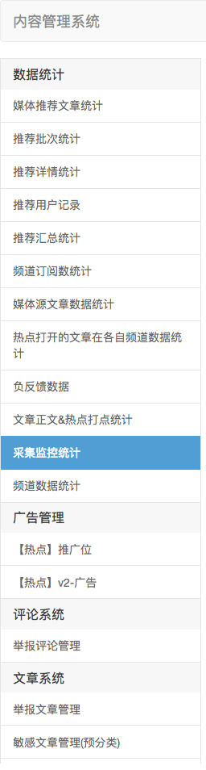
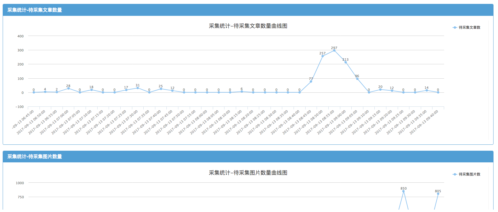

选中时间范围内 采集程序监控-概览
采集统计-待采集文章数量 峰值：341篇 平均值：40篇
采集统计-微信轮转时间 峰值：500分钟 平均值：120分钟
采集统计-待采集图片数量 峰值：1120个 平均值：101个
采集统计-网页轮转时间 峰值：304分钟 平均值：100分钟
采集统计-RSS加速采集轮转时间 峰值：4分钟 平均值：4分钟
采集统计-RSS轮转时间 峰值：12分钟 平均值：7分钟
采集统计-RSS加速采集轮转时间
更改页面名称为：采集程序监控
增加采集程序监控概览
增加RSS加速采集轮转时间统计 位置放置在RSS轮转时间统计之上即可
默认显示最近24小时的数据